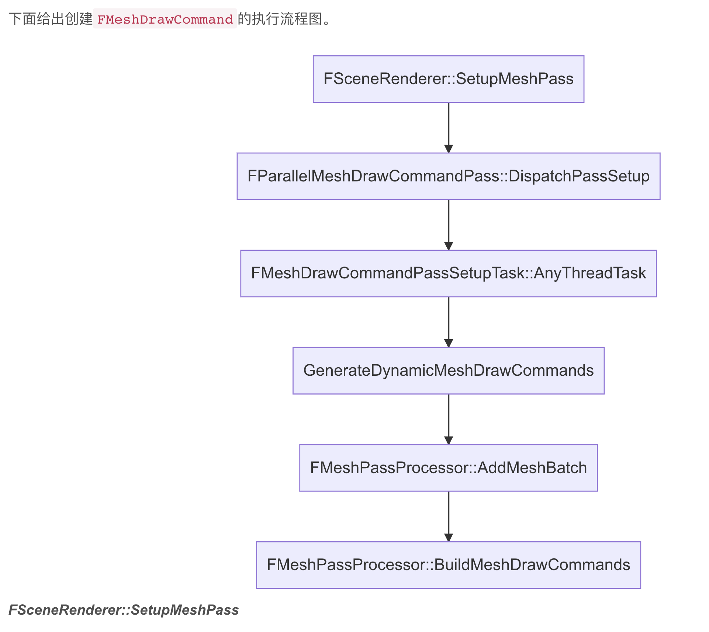
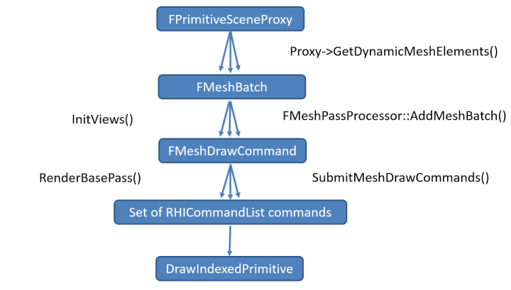
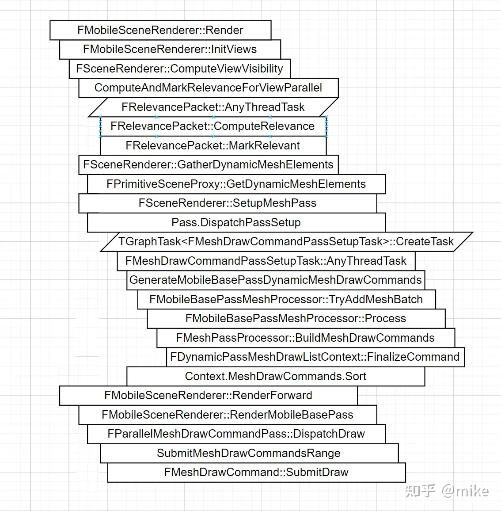
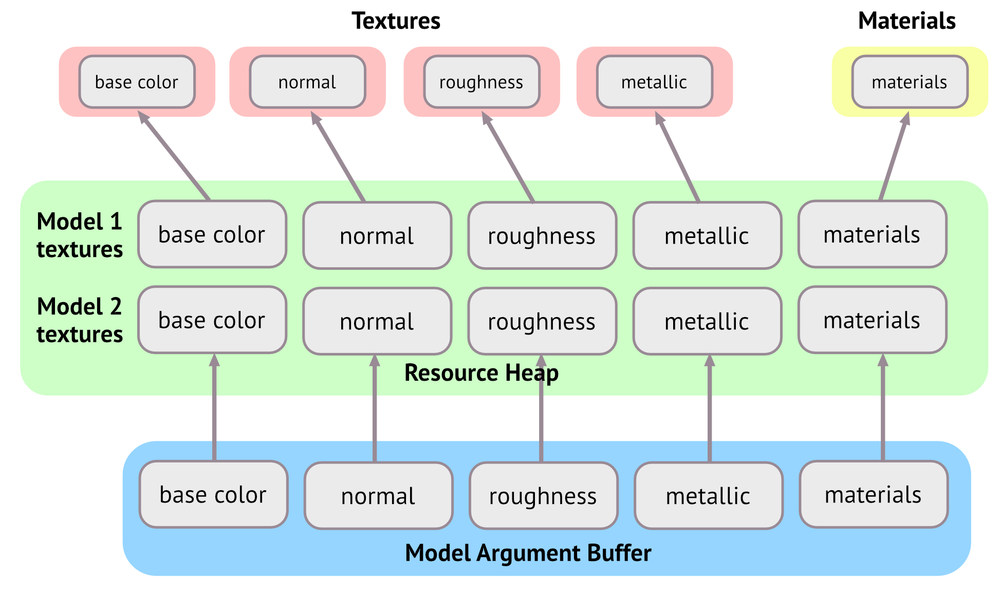
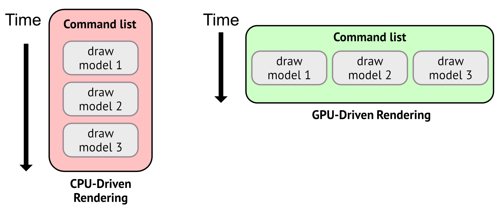

# 渲染机制解析
| 类型 | 解析 |
|---|---|
| UPrimitiveComponent | 图元组件，是所有可渲染或拥有物理模拟的物体父类。是 CPU 层裁剪的最小粒度单位。 |
| FPrimitiveSceneProxy | 图元场景代理，是 UPrimitiveComponent 在渲染器的代表，镜像了 UPrimitiveComponent 在渲染线程的状态。 |
| FPrimitiveSceneInfo | 渲染器内部状态（描述了 FRendererModule 的实现），相当于融合了 UPrimitiveComponent and FPrimitiveSceneProxy。只存在渲染器模块，所以引擎模块无法感知到它的存在。 |
| FScene | 是 UWorld 在渲染模块的代表。只有加入到 FScene 的物体才会被渲染器感知到。渲染线程拥有 FScene 的所有状态（游戏线程不可直接修改）。 |
| FSceneView | 描述了 FScene 内的单个视图（view），同个 FScene 允许有多个 view，换言之，一个场景可以被多个 view 绘制，或者多个 view 同时被绘制。每一帧都会创建新的 view 实例。 |
| FViewInfo | view 在渲染器的内部代表，只存在渲染器模块，引擎模块不可见。 |
| FSceneRenderer | 每帧都会被创建，封装帧间临时数据。下派生 FDeferredShadingSceneRenderer（延迟着色场景渲染器）和 FMobileSceneRenderer（移动端场景渲染器），分别代表 PC 和移动端的默认渲染器。 |
| FMeshBatchElement | 单个网格模型的数据，包含网格渲染中所需的部分数据，如顶点、索引、UniformBuffer 及各种标识等。 |
| FMeshBatch | 存着一组 FMeshBatchElement 的数据，这组 FMeshBatchElement 的数据拥有相同的材质和顶点缓冲。 |
| FMeshDrawCommand | 完整地描述了一个 Pass Draw Call 的所有状态和数据，如 shader 绑定、顶点数据、索引数据、PSO 缓存等。 |
| FMeshPassProcessor | 网格渲染 Pass 处理器，负责将场景中感兴趣的网格对象执行处理，将其由 FMeshBatch 对象转成一个或多个 FMeshDrawCommand。 |
需要特意指出，以上概念中除了 UPrimitiveComponent 是属于游戏线程的对象，其它皆属于渲染线程。
每一个 MeshPass 对应一个 PassProcessor ，每个 PassProcessor 都会有一个 FMeshPassProcessorRenderState 类型的实例输入，用来设置该 Pass 相关的状态、 UniformBuffer 等。FMaterialRenderProxy 是 FMaterial 用于渲染线程的代理，它可以透过 FMaterail 和 UMaterialInterface 访问到 Shader、渲染状态，光照模型等所有用户设置好的材质参数。FMeshPassProcessorRenderState 可以将一系列渲染状态重写，传递给 Mesh Pass Processor ，可以用于在外部进行配置。


# 渲染流程
在 UE4.21 之前，为了达到上述的目的，采用了网格渲染流程（Mesh Draw Pipeline），示意图如下：

UE4.21 及之前版本的网格绘制流程。
大致过程是渲染之时，渲染器会遍历场景的所有经过了可见性测试的 PrimitiveSceneProxy 对象，利用其接口收集不同的 FMeshBatch，然后在不同的渲染 Pass 中遍历这些 FMeshBatch，利用 Pass 对应的 DrawingPolicy 将其转成 RHI 的命令列表，最后才会生成对应图形 API 的指令，提交到 GPU 硬件中执行。
UE4.22 在此基础上，为了更好地做渲染优化，给网格渲染管线进行了一次比较大的重构，抛弃了低效率的 DrawingPolicy，用 PassMeshProcessor 取而代之，在 FMeshBatch 和 RHI 命令之间增加了一个概念 FMeshDrawCommand，以便更大程度更加可控地排序、缓存、合并绘制指令：

UE4.22 重构后新的网格绘制流程。增加了新的 FMeshDrawCommand 和 FMeshPassProcessor 等概念及操作。
这样做的目的主要有两个：
- 支持 RTX 的实时光线追踪。光线追踪需要遍历整个场景的物体，要保留整个场景的 shader 资源。
- GPU 驱动的渲染管线。包含 GPU 裁剪，所以 CPU 没法知道每一帧的可见性，但又不能每帧建立整个场景的绘制指令，否则无法达成实时渲染。
为了达成上述的目的，重构后的管线采取了更多聚合缓存措施，体现在：
- 静态图元在加入场景时就建立绘制指令，然后缓存。
- 允许 RHI 层做尽可能多的预处理。
- shader Binding Table Entry。
- Graphics Pipeline State。
- 避免静态网格每帧都重建绘制指令。
这里 MobileSceneRender 的动态渲染路径和 PC 端相比几乎没有区别。

首先场景中的物体会经历相机裁剪及遮挡剔除，然后会调用 ComputeAndMarkRelevanceForViewParallel 函数来标记需要渲染的物体使用什么渲染路径。
每个物体被封装到 FRelevancePacket，然后通过异步任务判断该物体的渲染路径。
OutHasDynamicMeshElementsMasks 中会记录哪些物体是需要动态渲染路径的，然后会调用 FSceneRenderer::GatherDynamicMeshElements 函数。如果被标记为动态渲染路径的物体会调用对于 Proxy 的 GatherDynamicMeshElements 函数。
# 从 FPrimitiveSceneProxy 到 FMeshBatch
FPrimitiveSceneProxy 是游戏线程 UPrimitiveComponent 在渲染线程的镜像数据，FMeshBatch 是本节才接触的新概念，它包含了绘制 Pass 所需的所有信息，解耦了网格 Pass 和 FPrimitiveSceneProxy，所以 FPrimitiveSceneProxy 并不知道会被哪些 Pass 绘制。

一个 FMeshBatch 拥有一组 FMeshBatchElement、一个顶点工厂和一个材质实例，同一个 FMeshBatch 的所有 FMeshBatchElement 共享着相同的材质和顶点缓冲（可可被视为 Vertex Factory）。但通常情况（大多数情况）下，FMeshBatch 只会有一个 FMeshBatchElement。
FSkeletalMeshSceneProxy 会根据不同的 LOD 索引，给每个 Section 网格添加一个 FMeshBatch，每个 FMeshBatch 只有一个 FMeshBatchElement 实例。此外 FSceneRender::GatherDynamicMeshElements 的逻辑中还有关键的一句 ComputeDynamicMeshRelevance ，它的作用是计算当前的 MeshBatch 会被哪些 MeshPass 引用，从而加到 view 的对应 MeshPass 的计数中
FMeshElementCollector 它的作用是收集指定 view 的所有可见 MeshBatch 信息，FMeshElementCollector 和 FSceneRenderer 是一一对应关系，每个 FSceneRenderer 拥有一个收集器。收集器收集完对应 view 的可见图元列表后，通常拥有一组需要渲染的 FMeshBatch 列表，以及它们的管理数据和状态，为后续的流程收集和准备足够的准备。此外，FMeshElementCollector 在收集完网格数据后，还可以指定需要等待处理的任务列表，以实现多线程并行处理的同步。收集完动态的 MeshElement，实际上，紧接着会调用 SetupMeshPass 来创建 FMeshPassProcessor
FMeshPassProcessor 的主要作用是：
- Pass 过滤。将该 Pass 无关的 MeshBatch 给过滤掉，比如深度 Pass 过滤掉透明物体。
- 选择绘制命令所需的 Shader 及渲染状态（深度、模板、混合状态、光栅化状态等）。
- 收集绘制命令涉及的 Shader 资源绑定。
- Pass 的 Uniform Buffer，如 ViewUniformBuffer、DepthPassUniformBuffer。
- 顶点工厂绑定（顶点数据和索引）。
- 材质绑定。
- Pass 的与绘制指令相关的绑定。
- 收集 Draw Call 相关的参数。
FMeshPassProcessor::BuildMeshDrawCommands 在最后阶段会调用 FMeshPassDrawListContext::FinalizeCommand 。 FMeshPassDrawListContext 提供了两个基本接口，是个抽象类，派生类有 FDynamicPassMeshDrawListContext 和 FCachedPassMeshDrawListContext ，分别代表了动态网格绘制指令和缓存网格绘制指令的上下文。
# 从 FMeshBatch 到 FMeshDrawCommand
1 | |
上面代码涉及的 EMeshPass 枚举定义如下：
1 | |
UE 事先罗列了所有可能需要绘制的 Pass，在 SetupMeshPass 阶段对需要用到的 Pass 并行化地生成 DrawCommand。注意这里只是收集并没有真的的绘制
FMeshBatch 转换成 FMeshDrawCommand 后，每个 Pass 都对应了一个 FMeshPassProcessor，每个 FMeshPassProcessor 保存了该 Pass 需要绘制的所有 FMeshDrawCommand，以便渲染器在合适的时间触发并渲染。
在 DispatchPassSetup 里面会设置 TaskContext 的数据，收集生成 MeshCommand 所需的数据。然后加入到 MeshDrawCommandPassSetupTask 。
DispatchPassSetup 中会为每个 Pass 创建一个 Task 用来创建创建 FMeshDrawCommand。所有的指令会存储到 ViewCommands.MeshCommands [PassIndex] 中，后期模块会从这里拿指令进行渲染。
FMeshDrawCommandPassSetupTask 担当了在网格渲染管线中担当了相当重要的角色， 包含动态网格绘和静态制绘制命令的生成、排序、合并等。其中排序阶段的键值由 FMeshDrawCommandSortKey 决定
FMeshDrawCommandSortKey
FMeshDrawCommandSortKey虽然可存储 BasePass、透明 Pass、普通 Pass3 种键值，但同时只有一种数据生效。- 键值的计算逻辑分散在不同的文件和阶段。譬如 BasePass 的键值可以发生在 BasePassRendering、DepthRendering 以及 MeshPassProcessor 阶段。其中它们的键值计算逻辑和解析如下表：
| 键名 | 计算代码 | 解析 |
|---|---|---|
| VertexShaderHash | PointerHash(VertexShader) | 材质所用的 VS 的指针哈希值。 |
| PixelShaderHash | PointerHash(PixelShader) | 材质所用的 PS 的指针哈希值。 |
| Masked | BlendMode == EBlendMode::BLEND_Masked ? 0 : 1 | 材质的混合模式是否 Masked。 |
| MeshIdInPrimitive | MeshIdInPrimitivePerView[ViewIndex] | 基于视图的共享同一个 Primitive 的稳定的网格 id。 |
| Distance | (uint32)~BitInvertIfNegativeFloat(((uint32)&Distance)) | 根据 ETranslucentSortPolicy 算出 Distance，再逆转负数距离。 |
| Priority | - | 直接从材质指定的透明排序优先级获得。 |
operator<直接对比 PackedData，表明越高位的数据优先级越高，具体地说，BasePass 的排序依据首先是判断是否 Masked 的材质，再判断 PS 和 VS 的地址哈希值；同理，透明通道的排序优先级依次是：材质指定的优先级、网格到摄像机的距离、网格 ID。
一般来说，对网格进行排序时，对性能影响最大的因素会作为最大的优先级。
譬如 BasePass 阶段，Masked 的材质在某些 GPU 设备会严重阻碍并行效率和吞吐量，排在最高位；而 PS 在指令数量、计算复杂度往往高于 VS，故而排在 VS 之前也是合情合理的。
但是，透明通道的排序有一点比较特殊，那就是物体与摄像机的距离远近关系，因为要正确绘制半透明物体的前后关系，必须将它们从远到近的距离进行绘制，否则前后关系会出现错乱。故而透明通道必须将距离放在最高位（优先级最大）。
- PackedData 将若干组数据打包成单个
uint64，在比较时只需比较一次，可提升排序的效率。否则按照传统的写法，用几个if-else语句，势必增加 CPU 指令数量，降低排序效率。 - 修改键值和相关的排序逻辑，可自定义排序优先级和算法。譬如增加若干排序维度：纹理、顶点数据、渲染状态等。
从 FMeshBatch 到 FMeshDrawCommand 阶段，渲染器做了大量的处理，为的是将 FMeshBatch 转换到 FMeshDrawCommand ，并保存到 FMeshPassProcessor 的 FMeshPassDrawListContext 成员变量中。期间还从各个对象中收集或处理网格绘制指令所需的一切数据，以便进入后续的渲染流程。下图展示了这些关键过程：

关于 FMeshDrawCommand 的合并，需要补充说明，动态绘制路径模式的 FDynamicPassMeshDrawListContext 的 FMeshDrawCommand 存储于 TArray 结构内，不会合并 FMeshDrawCommand ，亦不会动态实例化网格，但可以提升基于状态排序的鲁棒性。
缓存（静态）绘制路径模式的 FCachedPassMeshDrawListContext 依靠 FStateBucketMap 实现了合并和计数功能，以便在提交绘制阶段实例化绘制。
# 从 FMeshDrawCommand 到 RHICommandList
- 每个 Pass 都会执行类似上面的过程，同一帧会执行多次，但并不是所有的 Pass 都会开启，可通过 view 的 PassMask 动态开启和关闭。
- DispatchDraw 和 SubmitMeshDrawCommandsRange 特意采用了扁平化的数组，并且考虑了以下因素：
- 只通过可见性集合就可以方便快捷地划分 FVisibleMeshDrawCommand 的数组，以便扁平化地将向多线程系统 TaskGraph 提交 FMeshDrawCommand 绘制指令。
- 通过对 FMeshDrawCommand 列表的排序和增加 StateCache 减少向 RHICommandList 提交的指令数量，减少 RHICommandList 转换和执行的负载。增加这个步骤后，Fortnite 可以减少 20% 的 RHI 执行时间。
- 缓存一致性的遍历。紧密地打包 FMeshDrawCommand，轻量化、扁平化且连续地在内存中存储 SubmitDraw 所需的数据，可以提升缓存和预存取命中率。
TChunkedArray<FMeshDrawCommand> MeshDrawCommands;typedef TArray<FVisibleMeshDrawCommand, SceneRenderingAllocator> FMeshCommandOneFrameArray;TArray<FMeshDrawShaderBindingsLayout, TInlineAllocator<2>>ShaderLayouts;typedef TArray<FVertexInputStream, TInlineAllocator<4>>FVertexInputStreamArray;const int32 NumInlineShaderBindings = 10;
- 将 MeshDrawCommandPasses 转成 RHICommandList 的命令时支持并行模式，并行的分配策略只是简单地将地将数组平均分成等同于工作线程的数量，然后每个工作线程执行指定范围的绘制指令。这样做的好处是实现简单快捷易于理解，提升 CPU 的 cache 命中率，缺点是每个组内的任务执行时间可能存在较大的差异，这样整体的执行时间由最长的一组决定，势必拉长了时间，降低并行效率。针对这个问题，笔者想出了一些策略：
- 启发性策略。记录上一帧每个 MeshDrawCommand 的执行时间，下一帧根据它们的执行时间将相邻的 MeshDrawCommand 相加，当它们的总和趋近每组的平均值时，作为一组执行体。
- 考察 MeshDrawCommand 的某个或某几个属性。比如以网格的面数或材质数为分组的依据，将每组 MeshDrawCommand 的考察属性之和大致相同。
当然以上策略会增加逻辑复杂度，也可能降低 CPU 的 cache 命中率，实际效果要以运行环境为准。
FMeshDrawCommand::SubmitDraw的过程做了 PSO 和模板值的缓存，防止向 RHICommandList 提交重复的数据和指令，减少 CPU 和 GPU 的 IO 交互。
CPU 与 GPU 之间的 IO 和渲染状态的切换一直是困扰实时渲染领域的问题，在 CPU 和 GPU 异构的体系中尤为明显。所以，减少 CPU 和 GPU 的数据交互是渲染性能优化的一大措施。采取缓存 PSO 等状态后，在极端情况下，可以带来数倍的性能提升。
FMeshDrawCommand::SubmitDraw支持四种绘制模型，一个维度为是否有顶点索引，另一个维度为是否 Indirect 绘制。
Indirect Draw 简介
在没有 Indirect Draw 之前，应用程序如果想要实现同一个 Draw Call 绘制多个物体，只能使用 GPU Instance，但是 GPU Instance 有非常多的限制，比如需要完全一样的顶点、索引、渲染状态和材质数据，只允许 Transform 不一样。即使贴图可以打包 Atlas，材质属性和模型网格可以打包 StructuredBuffer，也没法避免每次绘制时顶点数必须一样这一个致命的限制，想要实现 GPU Driven Rendering Pipeline 必须打碎成相同顶点数的 Cluster。
Indirect Draw 技术的出现，GPU 驱动的渲染管线将变得更加简单且高效。它的核心思想是允许将同一个网格所需的资源引用放入一个 Argument Buffer：
不同网格的 Argument Buffer 又可以组成更长的 Buffer：
由于每个网格的数据可以存储在不同的 GPU 线程中，可以并行地执行多个网格之间的绘制，相较传统的串行绘制必然有明显的效率提升：
但是，Indirect Draw 只在 DirectX11、DirecXt12、Vulkan、Metal 等现代图形 API 中支持。


# 渲染机制总结
# 绘制管线优化技术
前面章节已经详细阐述了 UE 是如何将图元从 Component 一步步地转成最终的绘制指令，这样做的目的主要是为了提升渲染性能，总结起来，涉及的优化技术主要有以下几点：
- 绘制调用合并
由于所有的 FMeshDrawCommands 都是事先捕获，而不是立即提交给 GPU，这就给 Draw Call 合并提供了有利的基础保障。不过目前版本的合并是基于 D3D11 的特性，根据 shader 绑定决定是否合并成同一个 instance 调用。基于 D3D12 的聚合合并目前尚未实现。
除了合并，排序也能使得相似的指令在相邻时间绘制，提升 CPU 和 GPU 的缓存命中，减少调用指令数量。
- 动态实例化
为了合并两个 Draw Call，它们必须拥有一致的 shader 绑定（ FMeshDrawCommand::MatchesForDynamicInstancing 返回 true）。
当前只有缓存的网格绘制命令才会被动态实例化，并且受 FLocalVertexFactory 是否支持缓存的限制。另外，有一些特殊的情况也会阻止合并：
- Lightmap 产生了很小的纹理（可调整
DefaultEngine.ini的 MaxLightmapRadius 参数）。 - 逐组件的顶点颜色。
- SpeedTree 带风节点。
使用控制台命令 r.MeshDrawCommands.LogDynamicInstancingStats 1 可探查动态实例的效益。
- 并行绘制
大多数的网格绘制任务不是在渲染线程中执行的，而是由 TaskGraph 系统并行触发。并行部分有 Pass 的 Content 设置，动态指令生成 / 排序 / 合并等。
并行的数量由运行设备的 CPU 核心数量决定，并行开启之后，存在 Join 阶段，以等待并行的所有线程都执行完毕（ FSceneRenderer::WaitForTasksClearSnapshotsAndDeleteSceneRenderer 开启并行绘制等待）。
- 缓存绘制指令
UE 为了提升缓存的比例和效率，分离了动态和静态物体的绘制，分别形成动态绘制路径和静态绘制路径，而静态绘制路径可以在图元加入场景时就缓存 FMeshBatch 和 FMeshDrawCommand，这样就达成了一次生成多次绘制带来的高效益。
- 提升缓存命中率
CPU 或 GPU 的缓存都具体时间局部性和空间局部性原则。时间局部性意味着最近访问的数据如果再次被访问，则缓存命中的概率较大；空间局部性意味着当前在处理的数据的相邻数据被缓存命中的概率较大，还包含预读取（prefetch）命中率。
UE 通过以下手段来提升缓存命中率：
- 基于数据驱动的设计，而非面向对象的设计。
- 如 FMeshDrawCommand 的结构设计。
- 连续存储数据。
- 使用 TChunkedArray 存储 FMeshDrawCommand。
- 内存对齐。
- 使用定制的内存对齐器和内存分配器。
- 轻量化数据结构。
- 连续存取数据。
- 连续遍历绘制指令。
- 绘制指令排序。
- 使相似的指令排在一起，充分利用缓存的时间局部性。
# 延迟渲染
FSceneRenderer 是 UE 场景渲染器父类，是 UE 渲染体系的大脑和发动机，在整个渲染体系拥有举足轻重的位置，主要用于处理和渲染场景，生成 RHI 层的渲染指令。 FSceneRenderer
由游戏线程的 FRendererModule::BeginRenderingViewFamily 负责创建和初始化，然后传递给渲染线程。渲染线程会调用 FSceneRenderer::Render() ，渲染完返回后，会删除 FSceneRenderer 的实例。也就是说， FSceneRenderer 会被每帧创建和销毁。
FSceneRenderer 拥有两个子类： FMobileSceneRenderer 和 FDeferredShadingSceneRenderer 。
FMobileSceneRenderer 是用于移动平台的场景渲染器，默认采用了前向渲染的流程。
FDeferredShadingSceneRenderer 虽然名字叫做延迟着色场景渲染器，但其实集成了包含前向渲染和延迟渲染的两种渲染路径，是 PC 和主机平台的默认场景渲染器
FDeferredShadingSceneRenderer 主要包含了 Mesh Pass、光源、阴影、光线追踪、反射、可见性等几大类接口。其中最重要的接口非 FDeferredShadingSceneRenderer::Render 莫属，它是 FDeferredShadingSceneRenderer 的渲染主入口，主流程和重要接口的调用都直接或间接发生它内部。若细分 FDeferredShadingSceneRenderer::Render 的逻辑，则可以划分成以下主要阶段：
| 阶段 | 解析 |
|---|---|
| FScene::UpdateAllPrimitiveSceneInfos | 更新所有图元的信息到 GPU，若启用了 GPUScene，将会用二维纹理或 StructureBuffer 来存储图元的信息。 |
| FSceneRenderTargets::Allocate | 若有需要（分辨率改变、API 触发），重新分配场景的渲染纹理，以保证足够大的尺寸渲染对应的 view。 |
| InitViews | 采用裁剪若干方式初始化图元的可见性，设置可见的动态阴影，有必要时会对阴影平截头体和世界求交（全场阴影和逐物体阴影）。 |
| PrePass / Depth only pass | 提前深度 Pass，用来渲染不透明物体的深度。此 Pass 只会写入深度而不会写入颜色，写入深度时有 disabled、occlusion only、complete depths 三种模式，视不同的平台和 Feature Level 决定。通常用来建立 Hierarchical-Z，以便能够开启硬件的 Early-Z 技术，提升 Base Pass 的渲染效率。 |
| ComputeLightGrid | |
| BuildHZB | 构建 HZB 贴图，取四个像素最远的深度的像素 |
| Issue Occlusion Queries / BeginOcclusionTests | 开启遮挡渲染，此帧的渲染遮挡数据用于下一帧 InitViews 阶段的遮挡剔除。此阶段主要使用物体的包围盒来渲染，也可能会打包相近物体的包围盒以减少 Draw Call。 |
| Base pass | 也就是前面章节所说的几何通道。用来渲染不透明物体（Opaque 和 Masked 材质）的几何信息，包含法线、深度、颜色、AO、粗糙度、金属度等等。这些几何信息会写入若干张 GBuffer 中。此阶段不会计算动态光源的贡献，但会计算 Lightmap 和天空光的贡献。 |
| ShadowDepths | 以灯光视角渲染场景深度，就是 shadowmap |
| RenderLumenSceneLighting | 主要更新 Lumen Cards 和计算 lumen 直接关照，计算 radiance |
| DiffuseIndirectAndAO | 计算间接关照和 AO，有 SSGI 降噪、屏幕空间探针收集、反射以及非直接光组合等几个阶段 |
| Lighting | 此阶段也就是前面章节所说的光照通道，是标准延迟着色和分块延迟着色的混合体。会计算开启阴影的光源的阴影图，也会计算每个灯光对屏幕空间像素的贡献量，并累计到 Scene Color 中。此外，还会计算光源也对 translucency lighting volumes 的贡献量。 |
| SkyAtmosphere | 天空雾或者天空 |
| Fog | 在屏幕空间计算雾和大气对不透明物体表面像素的影响。 |
| Translucency | 渲染半透明物体阶段。所有半透明物体由远到近（视图空间）逐个绘制到离屏渲染纹理（offscreen render target，代码中叫 separate translucent render target）中，接着用单独的 pass 以正确计算和混合光照结果。 |
| Post Processing | 后处理阶段。包含了不需要 GBuffer 的 Bloom、色调映射、Gamma 校正等以及需要 GBuffer 的 SSR、SSAO、SSGI 等。此阶段会将半透明的渲染纹理混合到最终的场景颜色中。 |
上面只是简单列出了部分过程而非全部，可以利用 RenderDoc 工具截帧或用命令行 profilegpu 可以查看 UE 每帧的详细渲染过程。
# FScene::UpdateAllPrimitiveSceneInfos
FScene::UpdateAllPrimitiveSceneInfos 的主要作用是删除、增加、更新 CPU 侧的图元数据，且同步到 GPU 端。其中 GPU 的图元数据存在两种方式：
- 每个图元独有一个 Uniform Buffer。在 shader 中需要访问图元的数据时从该图元的 Uniform Buffer 中获取即可。这种结构简单易理解，兼容所有 FeatureLevel 的设备。但是会增加 CPU 和 GPU 的 IO，降低 GPU 的 Cache 命中率。
- 使用 Texture2D 或 StructuredBuffer 的 GPU Scene，所有图元的数据按规律放置到此。在 shader 中需要访问图元的数据时需要从 GPU Scene 中对应的位置读取数据。需要 SM5 支持，实现难度高，不易理解，但可减少 CPU 和 GPU 的 IO，提升 GPU Cache 命中率，可更好地支持光线追踪和 GPU Driven Pipeline。
GPUScene 的 PrimitivesToUpdate 和 PrimitivesMarkedToUpdate 收集好需要更新的所有图元索引后，会在 FDeferredShadingSceneRenderer::Render 的 InitViews 之后同步给 GPU
开始 FDeferredShadingSceneRenderer::Render 逻辑
# InitViews
InitViews 是 GPU Scene 的更新之后紧挨着执行。它的处理的渲染逻辑很多且重要：可见性判定，收集场景图元数据和标记，创建可见网格命令，初始化 Pass 渲染所需的数据等等。
在 InitViews 没有太多逻辑，实际上很多逻辑分散在了上面的一些重要接口中：
PreVisibilityFrameSetup 做了大量的初始化工作，如静态网格、Groom、SkinCache、特效、TAA、ViewState 等等。接着继续分析
ComputeViewVisibility 最重要的功能就是处理图元的可见性，包含平截头体裁剪、遮挡剔除，以及收集动态网格信息、创建光源信息等。
PostVisibilityFrameSetup 的主要工作是利用 view 的视锥裁剪光源，防止视线外或屏幕占比很小或没有光照强度的光源进入 shader 计算。此外，还会处理贴花排序、调整之前帧的 RT 和雾效、光束等。
在 InitViews 过程：
- PreVisibilityFrameSetup：可见性判定预处理阶段，主要是初始化和设置静态网格、Groom、SkinCache、特效、TAA、ViewState 等等。
- 初始化特效系统（FXSystem）。
- ComputeViewVisibility：计算视图相关的可见性，执行视锥体裁剪、遮挡剔除，收集动态网格信息，创建光源信息等。
- FPrimitiveSceneInfo::UpdateStaticMeshes：更新静态网格数据。
- ViewState::GetPrecomputedVisibilityData：获取预计算的可见性数据。
- FrustumCull：视锥体裁剪。
- ComputeAndMarkRelevanceForViewParallel：计算和标记视图并行处理的关联数据。
- GatherDynamicMeshElements：收集 view 的动态可见元素，上一篇中已经解析过。
- SetupMeshPass：设置网格 Pass 的数据，将 FMeshBatch 转换成 FMeshDrawCommand，上一篇中已经解析过。
- CreateIndirectCapsuleShadows：创建胶囊体阴影。
- UpdateSkyIrradianceGpuBuffer：更新天空体环境光照的 GPU 数据。
- InitSkyAtmosphereForViews：初始化大气效果。
- PostVisibilityFrameSetup：可见性判定后处理阶段，利用 view 的视锥裁剪光源，处理贴花排序，调整之前帧的 RT 和雾效、光束等。
- View.InitRHIResources：初始化视图的部分 RHI 资源。
- SetupVolumetricFog：初始化和设置体积雾。
- OnStartRender：通知 RHI 已经开启了渲染，以初始化视图相关的数据和资源。
# PrePass
PrePass 又被称为提前深度 Pass、Depth Only Pass、Early-Z Pass，用来渲染不透明物体的深度。此 Pass 只会写入深度而不会写入颜色，写入深度时有 disabled、occlusion only、complete depths 三种模式，视不同的平台和 Feature Level 决定。
PrePass 可以由 DBuffer 发起，也可由 Forward Shading 触发，通常用来建立 Hierarchical-Z，以便能够开启硬件的 Early-Z 技术，还可被用于遮挡剔除，提升 Base Pass 的渲染效率。
开启 PrePass 需要满足以下两个条件：
- 非硬件 Tiled 的 GPU。现代移动端 GPU 通常自带 Tiled，且是 TBDR 架构，已经在 GPU 层做了 Early-Z，无需再显式绘制。
- 指定了有效的 EarlyZPassMode 或者渲染器的 bEarlyZPassMovable 不为 0。
非常值得一提的是：WorldGridMaterial 这个是 prepass 深度材质，使用的 Shading Model 是 Default Lit，材质中也存在冗余的节点。如果想要做极致的优化，建议在配置文件中更改此材质，删除冗余的材质节点，改成 Unlit 模式更佳，以最大化地缩减 shader 指令，提升渲染效率。
# BasePass
UE 的 BasePass 就是延迟渲染里的几何通道，用来渲染不透明物体的几何信息，包含法线、深度、颜色、AO、粗糙度、金属度等等，这些几何信息会写入若干张 GBuffer 中。
Base Pass 正常情况下使用的是 FMeshBatch 收集到的材质，也就是网格自身的材质，唯一不同的是 shader 中不会启用光照计算，类似于 Unlit 模式。总结 BasePass 的绘制嵌套关系，
1 | |
# LightingPass
UE 的 LightingPass 就是前面章节所说的光照通道。此阶段会计算开启阴影的光源的阴影图，也会计算每个灯光对屏幕空间像素的贡献量，并累计到 Scene Color 中。此外，还会计算光源也对 translucency lighting volumes 的贡献量。
LightingPass 在 FDeferredShadingSceneRenderer::Render 的入口及其相邻重要
Lighting Pass 的负责的渲染逻辑多而杂，包含间接阴影、间接 AO、透明体积光照、光源计算、LPV、天空光、SSS 等等，但光照计算的核心逻辑在 RenderLights
渲染光源时，会先绘制无阴影的光源，起始索引由 SortedLightSet.SimpleLightsEnd 等变量决定，再绘制带阴影的光源，起始索引由 SortedLightSet.AttenuationLightStart 决定。无阴影的光源才支持 Tiled 和 Clustered。
无论是否带阴影，渲染光源时最终都会调用 RenderLight （注意不是 RenderLights ）真正地执行单个光源的光照计算。
无论是平行光源还是局部光源，都是在屏幕空间执行绘制，并且平行光使用覆盖全屏幕的矩形来绘制光照，点光源或区域光使用球体绘制光源，而聚光灯使用圆锥体，这样做的好处是可以快速剔除光源包围盒外的像素，加速光照计算效率。总结 LightingPass 中的嵌套关系，伪代码如下：
1 | |
LightingPass 主要流程：
DeferredLightPixelMainSetupLightDataForStandardDeferredGetDynamicLightingGetDynamicLightingSplitGetLocalLightAttenuationGetShadowTermsIntegrateBxDF_CapsuleLightLineIrradianceSphereHorizonCosWrapClosestPointLineToRayIntegrateBxDF_AreaLightShadingModelIDDefaultLitBxDFHairBxDFClearCoatBxDFSubsurfaceBxDFClothBxDFEyeBxDF
SphereMaxNoHDiffuse_LambertRectGGXApproxLTCSpecularGGXLightAccumulator_AddSplitLightAccumulator_GetResultSplit
# Translucency
Translucency 是渲染半透明物体的阶段，所有半透明物体在视图空间由远到近逐个绘制到离屏渲染纹理（separate translucent render target）中，接着用单独的 pass 以正确计算和混合光照结果。
半透明阶段会渲染半透明的颜色、扰动纹理（用于折射等效果）、速度缓冲（用于 TAA 抗锯齿、后处理效果），其中最主要的渲染半透明的逻辑在 RenderTranslucency
半透明渲染的 C++ 逻辑和 shader 逻辑跟 Base Pass 比较相似，不同的是半透明只处理半透明物体，Uniform Buffer 部分不一样，Render State 也有所不同，光照算法也有区别计算。但它们的主干逻辑大致雷同
# PostProcessing
后处理阶段，也是 FDeferredShadingSceneRenderer::Render 的最后一个阶段。包含了不需要 GBuffer 的 Bloom、色调映射、Gamma 校正等以及需要 GBuffer 的 SSR、SSAO、SSGI 等。此阶段会将半透明的渲染纹理混合到最终的场景颜色中。
后处理没有直接使用 RHICommandList ，而用 GraphBuilder 代替之。 GraphBuilder 即是依赖性渲染图（RDG），可以自动裁减无用的 Pass，自动管理 Pass 之间的依赖关系和资源的生命周期，以及资源、PSO、渲染指令的优化。
# 移动端渲染流程
FMobileSceneRenderer
继承自 FSceneRenderer，它负责移动端的场景渲染流程，而 PC 端是同样继承自 FSceneRenderer 的 FDeferredShadingSceneRenderer。
FMobileSceneRenderer 的逻辑和步骤：

渲染流程
移动端的场景渲染器的主流程也发生在 FMobileSceneRenderer::Render 中

关于上面的流程图，有以下几点需要加以说明：
- 流程图节点
bDeferredShading和bDeferredShading2是同一个变量，这里区分开主要是为了防止mermaid语法绘图错误。 - 带 * 的节点是有条件的，非必然执行的步骤。
UE4.26 便加入了移动端的延迟渲染管线，所以上述代码中有前向渲染分支 RenderForward 和延迟渲染分支 RenderDeferred ，它们返回的都是渲染结果 SceneColor。
移动端也支持了图元 GPU 场景、SDF 阴影、AO、天空大气、虚拟纹理、遮挡剔除等渲染特性。
自 UE4.26 开始，渲染体系广泛地使用了 RDG 系统，移动端的场景渲染器也不例外。上述代码中总共声明了数个 FRDGBuilder 实例，用于计算光源格子，以及渲染天空大气 LUT、自定义深度、速度缓冲、渲染后置事件、后处理等，它们都是相对独立的功能模块或渲染阶段。
# RenderForward
移动端前向渲染主要步骤跟 PC 端类似，依次渲染 PrePass、BasePass、特殊渲染（贴花、AO、遮挡剔除等）、半透明物体。它们的流程图如下：

# RenderDeferred
绘制光源时，按光源类型划分为三个步骤：平行光、非分簇简单光源、局部光源（点光源和聚光灯）。需要注意的是，移动端只支持默认光照模型 (MSM_DefaultLit) 的计算，其它高级光照模型（头发、次表面散射、清漆、眼睛、布料等）暂不支持。
绘制平行光时，最多只能绘制 1 个，采用的是全屏幕矩形绘制，支持若干级 CSM 阴影。
绘制非分簇简单光源时，无论是点光源还是聚光灯，都采用球体绘制，不支持阴影。
绘制局部光源时，会复杂许多，先绘制局部光源模板缓冲，再设置光栅化和深度状态，最后才绘制光源。其中点光源采用球体绘制，不支持阴影；聚光灯采用锥体绘制，可以支持阴影，默认情况下，聚光灯不支持动态光影计算，
# 绘制光源
每个局部光源首先绘制光源范围内的 Mask，再计算通过了 Stencil 测试（Early-Z）的像素的光照。具体的剖析过程以下图的聚光灯为例：

上：场景中一盏等待渲染的聚光灯；中：利用模板 Pass 绘制出的模板 Mask（白色区域），标记了屏幕空间中和聚光灯形状重叠且深度更近的像素 ；下：对有效像素进行光照计算后的效果。
执行光照的像素必须在光源形状体之内，光源形状之外的像素会被剔除。模板 Pass 标记的是比光源形状深度更近的像素（光源形状体之外的像素），光源绘制 Pass 通过模板测试剔除模板 Pass 标记的像素，然后再通过深度测试找出在光源形状体内的像素，从而提升光照计算效率。
移动端的 BasePassPS 的处理过程比较复杂，步骤繁多，主要有：解压插值数据，获取并计算材质属性，计算并缓村 GBuffer，处理或调整 GBuffer 数据，计算前向渲染分支的光照（平行光、局部光），计算距离场、CSM 等阴影，计算天空光，处理静态光照、非直接光和 IBL，计算雾效，以及处理水体、头发、薄层透明度等特殊着色模型。

−8）。